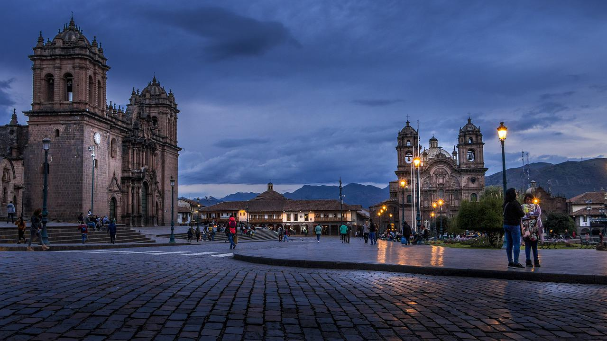
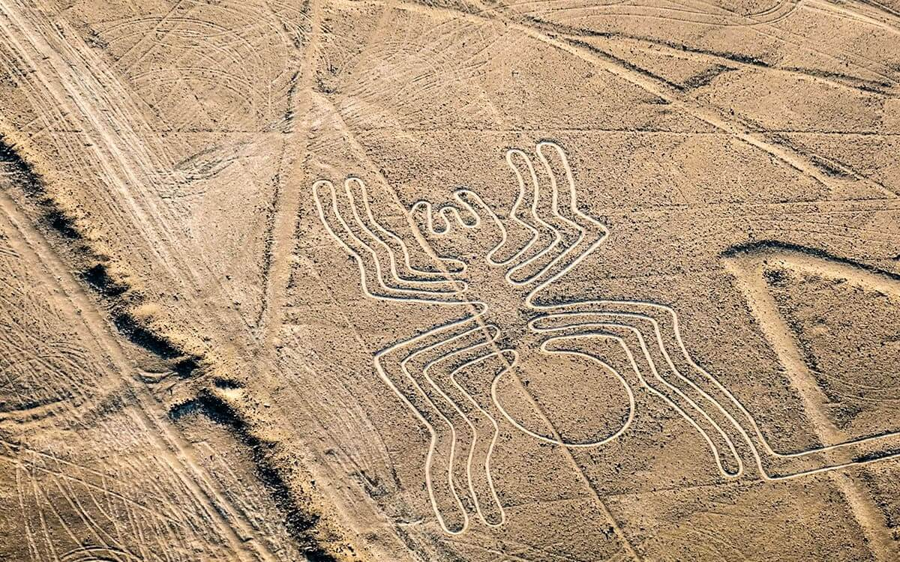
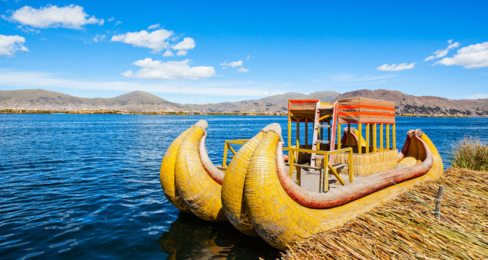

Machu Picchu es una de las siete maravillas del mundo moderno, ubicada en Cusco. Es un destino histórico y cultural fascinante, rodeado de montañas y naturaleza espectacular. Visitarlo es una experiencia inolvidable para cualquier viajero.
Machu Picchu

Cusco
La ciudad de Cusco fue el antiguo centro del Imperio Inca. Sus calles están llenas de historia y belleza arquitectónica, combinando influencias incas y coloniales. Es el punto de partida para quienes quieren explorar más a fondo el legado incaico.
Líneas de Nazca
Las Líneas de Nazca son geoglifos en el desierto de Nazca, cuya creación sigue siendo un misterio. Estos enormes dibujos en el suelo representan figuras geométricas, animales y humanos, y solo pueden ser apreciados desde el aire.
Lago Titicaca
El Lago Titicaca es el lago navegable más alto del mundo, ubicado en la región de Puno. Sus islas flotantes, habitadas por los Uros, son un testimonio vivo de las antiguas culturas que han florecido en esta región andina.